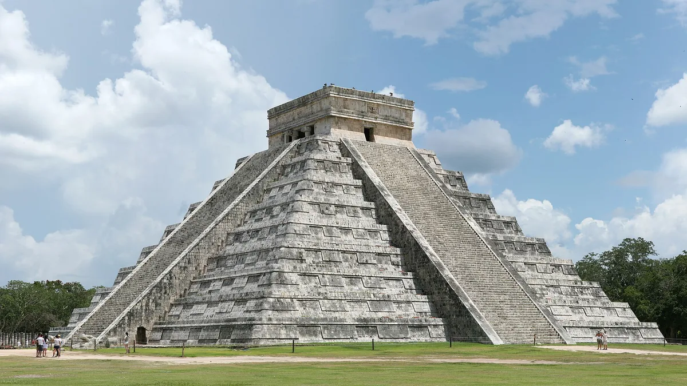

01
Chichén Itzá
Zona arqueológicaMX$ 697
duas bilheterias somadas

Foto: Daniel Schwen · CC BY-SA 4.0 · Wikimedia Commons · recortada
Valor da entrada
Fonte: página oficial do INAH para a zona arqueológica, consultada em 17/set/2026.
São duas cobranças, e é isso que pega o visitante desavisado: MX$ 105 do INAH, que é a taxa federal, mais MX$ 592 da taxa estadual de Yucatán para estrangeiro. Dá MX$ 697. O mexicano paga MX$ 105 + MX$ 205.
Fontes divergem a imprensa mexicana publicou em janeiro de 2026 que a taxa estadual seria de MX$ 571, e a página do INAH diz MX$ 592. Não conseguimos conciliar as duas, e por isso as duas estão aqui. Leve o valor maior.
São duas cobranças, e é isso que pega o visitante desavisado: MX$ 105 do INAH, que é a taxa federal, mais MX$ 592 da taxa estadual de Yucatán para estrangeiro. Dá MX$ 697. O mexicano paga MX$ 105 + MX$ 205.
Fontes divergem a imprensa mexicana publicou em janeiro de 2026 que a taxa estadual seria de MX$ 571, e a página do INAH diz MX$ 592. Não conseguimos conciliar as duas, e por isso as duas estão aqui. Leve o valor maior.
Dias em que não funciona
Abre todos os dias, de segunda a domingo, das 8h às 16h.
O domingo gratuito não vale para você. A isenção dominical do INAH é para mexicanos e estrangeiros residentes no México, com documento. O turista brasileiro paga integral todos os dias.
O domingo gratuito não vale para você. A isenção dominical do INAH é para mexicanos e estrangeiros residentes no México, com documento. O turista brasileiro paga integral todos os dias.
Onde fica
A 115 km de Mérida pela rodovia 180, junto à localidade de Piste, a 2 km do sítio. Há transporte público até Piste.
De Cancún são cerca de 200 km, o que faz deste o bate-volta mais longo do guia. Telefone: 985 851 0137.
Ver no mapa
De Cancún são cerca de 200 km, o que faz deste o bate-volta mais longo do guia. Telefone: 985 851 0137.
Ver no mapa
Quem não paga
Maiores de 60 anos, menores de 13, aposentados, pensionistas, pessoas com deficiência, docentes e estudantes em atividade são isentos da taxa do INAH.
Não confirmado se a isenção vale também para a taxa estadual de Yucatán, que é a parte cara. A página do INAH não trata dela.
Não confirmado se a isenção vale também para a taxa estadual de Yucatán, que é a parte cara. A página do INAH não trata dela.